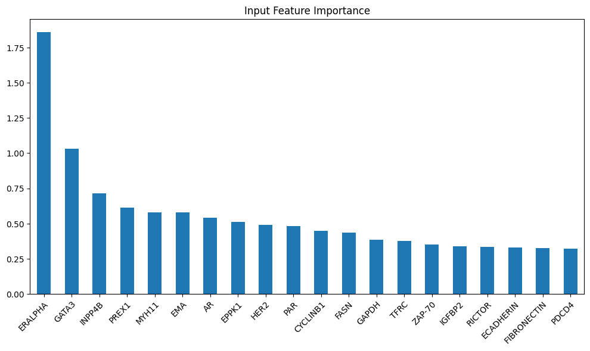
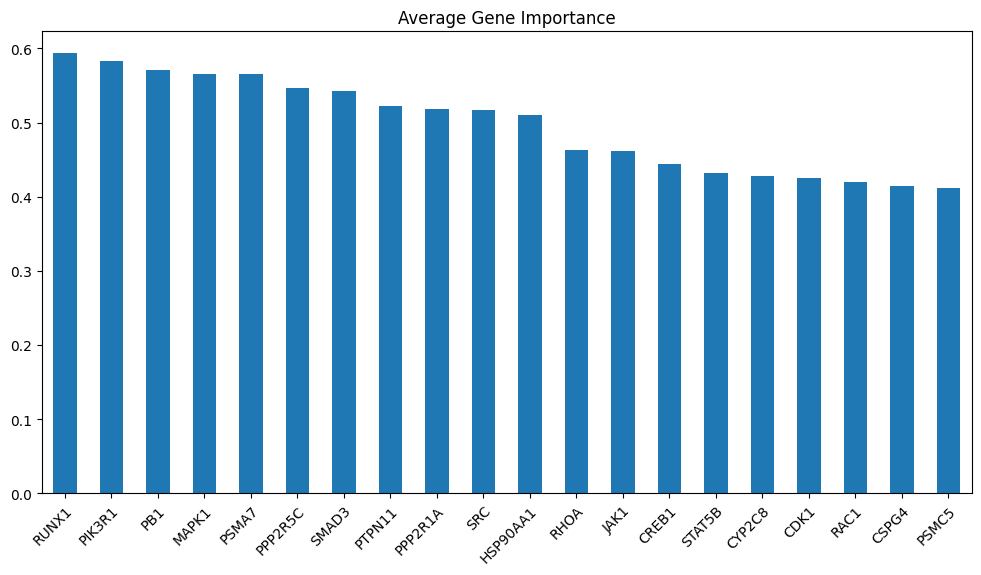
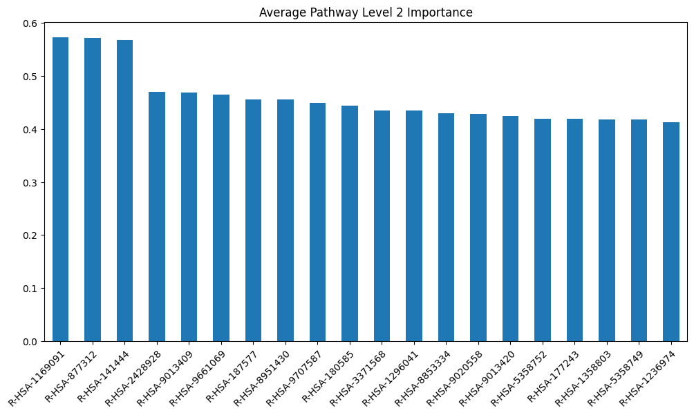
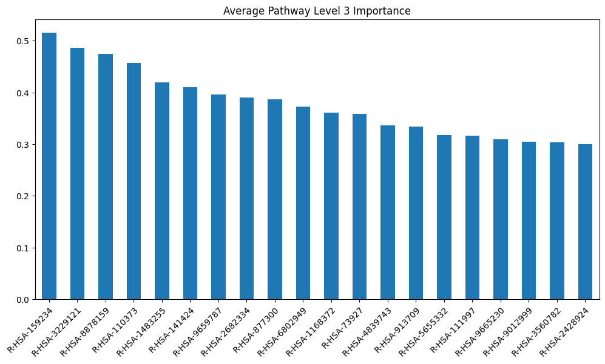
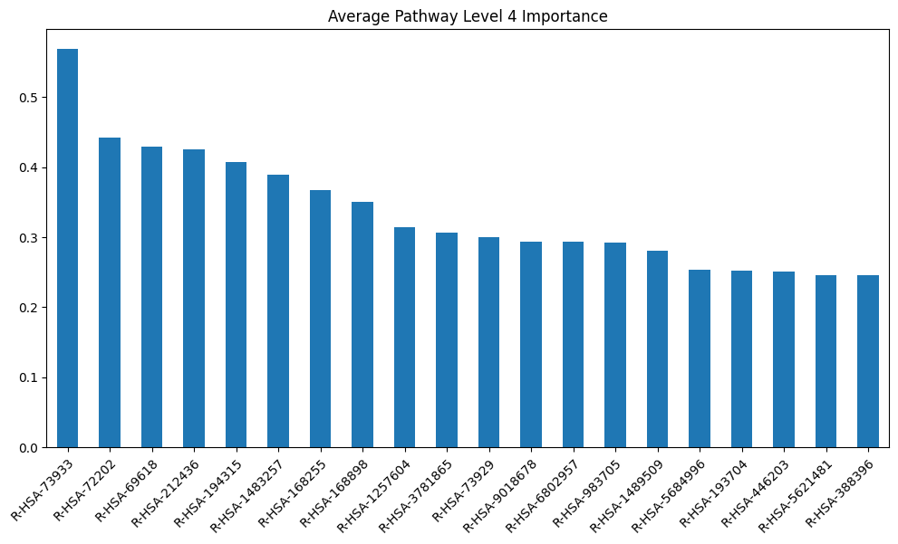
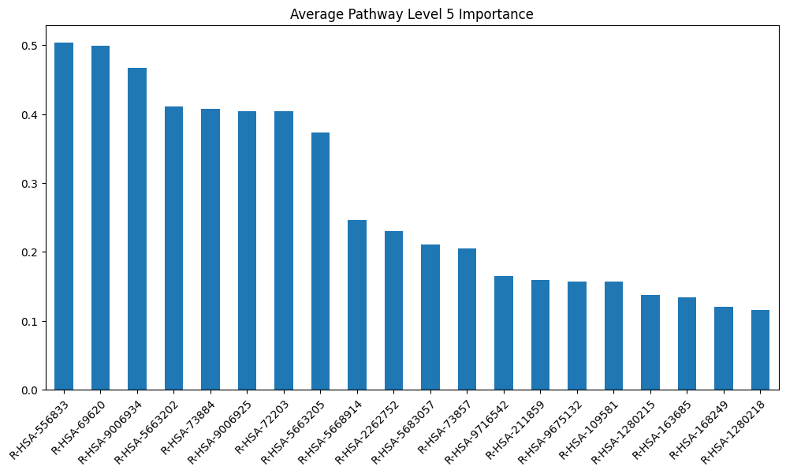
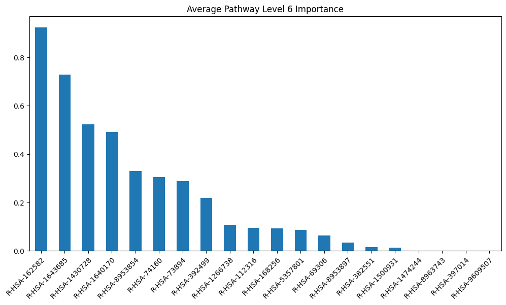

MOGDx & PNet
This notebook shows the operability of MOGDx with a biologically interpretable encoder architecture modelled from the paper PNet
import pandas as pd
import numpy as np
import os
import sys
sys.path.insert(0 , './../')
from MAIN.utils import *
from MAIN.train import *
import MAIN.preprocess_functions
from MAIN.GNN_MME import GCN_MME , GSage_MME , GAT_MME
from Modules.PNetTorch.MAIN.reactome import ReactomeNetwork
from Modules.PNetTorch.MAIN.Pnet import MaskedLinear , PNET
from Modules.PNetTorch.MAIN.utils import numpy_array_to_one_hot, get_gpu_memory
from Modules.PNetTorch.MAIN.interpret import interpret , evaluate_interpret_save , visualize_importances
import torch
import torch.nn.functional as F
import dgl
from dgl.dataloading import MultiLayerFullNeighborSampler
import matplotlib.pyplot as plt
from sklearn.model_selection import StratifiedKFold
import networkx as nx
from datetime import datetime
import joblib
import warnings
import gc
import copy
warnings.filterwarnings("ignore")
print("Finished Library Import \n")
Finished Library Import
data_input = './../../data/TCGA/BRCA/raw/'
snf_net = 'RPPA_mRNA_graph.graphml'
index_col = 'index'
target = 'paper_BRCA_Subtype_PAM50'
interpret_feat = True
pnet = True
device = torch.device('cuda' if torch.cuda.is_available() else 'cpu')# Get GPU device name, else use CPU
print("Using %s device" % device)
get_gpu_memory()
datModalities , meta = data_parsing(data_input , ['mRNA' , 'RPPA' ] , target , index_col)
if interpret_feat :
features = {}
for i , mod in enumerate(datModalities) :
features[i] = list(datModalities[mod].columns)
model_scores = {}
layer_importance_scores = {}
if pnet :
# List of cancer genes was taken from the PNet paper dataset
genes = pd.read_csv('./../../data/genelists/BRCA_genelist.txt', header=0 , delimiter='\t')
# Build network to obtain gene and pathway relationships
net = ReactomeNetwork(genes_of_interest=np.unique(list(genes['genes'].values)) , n_levels=5)
graph_file = data_input + '../Networks/' + snf_net
g = nx.read_graphml(graph_file)
meta = meta.loc[list(g.nodes())]
meta = meta.loc[sorted(meta.index)]
label = F.one_hot(torch.Tensor(list(meta.astype('category').cat.codes)).to(torch.int64))
skf = StratifiedKFold(n_splits=5 , shuffle=True)
print(skf)
MME_input_shapes = [ datModalities[mod].shape[1] for mod in datModalities]
h = reduce(merge_dfs , list(datModalities.values()))
h = h.loc[meta.index]
h = h.loc[sorted(h.index)]
g = dgl.from_networkx(g , node_attrs=['idx' , 'label'])
g.ndata['feat'] = torch.Tensor(h.to_numpy())
g.ndata['label'] = label
#g = dgl.add_self_loop(g)
del datModalities
gc.collect()
output_metrics = []
test_logits = []
test_labels = []
for i, (train_index, test_index) in enumerate(skf.split(meta.index, meta)) :
model = GCN_MME(MME_input_shapes , [16 , 32] , 32 , [16] , len(meta.unique()), PNet=net).to(device)
print(model)
print(g)
g = g.to(device)
get_gpu_memory()
loss_plot = train(g, train_index, device , model , label , 2000 , 1e-3 , 100 , batch_size=1024)
plt.title(f'Loss for split {i}')
plt.show()
plt.clf()
sampler = MultiLayerFullNeighborSampler(
len(model.gnnlayers), # fanout for each layer
prefetch_node_feats=['feat'],
prefetch_labels=['label'],
)
test_dataloader = DataLoader(
g,
torch.Tensor(test_index).to(torch.int64).to(device),
sampler,
device=device,
batch_size=1024,
shuffle=True,
drop_last=False,
num_workers=0,
use_uva=False,
)
test_output_metrics = evaluate(model , g, test_dataloader)
print(
"Fold : {:01d} | Test Accuracy = {:.4f} | F1 = {:.4f} ".format(
i+1 , test_output_metrics[1] , test_output_metrics[2] )
)
test_logits.extend(test_output_metrics[-2])
test_labels.extend(test_output_metrics[-1])
output_metrics.append(test_output_metrics)
if i == 0 :
best_model = copy.deepcopy(model).to('cpu')
best_idx = i
elif output_metrics[best_idx][1] < test_output_metrics[1] :
best_model = copy.deepcopy(model).to('cpu')
best_idx = i
if interpret_feat :
get_gpu_memory()
torch.cuda.empty_cache()
gc.collect()
model.eval()
model.features = [element for sublist in features.values() for element in sublist]
if i ==0 :
model_scores['Input Features'] = {}
model_scores['Input Features']['mad'] = pd.DataFrame(model.feature_importance(test_dataloader , device).abs().mean(axis=0)).T
else :
model_scores['Input Features']['mad'].loc[i] = model.feature_importance(test_dataloader , device).abs().mean(axis=0)
get_gpu_memory()
torch.cuda.empty_cache()
gc.collect()
layer_importance_scores[i] = model.layerwise_importance(test_dataloader , device)
# Get the number of layers of the model
n_layers = len(next(iter(layer_importance_scores[i].values())))
# Sum corresponding modalities importances
mean_absolute_distance = [sum([layer_importance_scores[i][k][ii].abs().mean() for k in layer_importance_scores[i].keys()]) for ii in range(n_layers)]
summed_variation_attr = [sum([layer_importance_scores[i][k][ii].std()/max(layer_importance_scores[i][k][ii].std()) for k in layer_importance_scores[i].keys()]) for ii in range(n_layers)]
for ii , (mad , sva) in enumerate(zip(mean_absolute_distance , summed_variation_attr)) :
layer_title = f"Pathway Level {ii} Importance" if ii > 0 else "Gene Importance"
if i == 0 :
model_scores[layer_title] = {}
model_scores[layer_title]['mad'] = pd.DataFrame(mad).T
model_scores[layer_title]['sva'] = pd.DataFrame(sva).T
else :
model_scores[layer_title]['mad'].loc[i] = mad
model_scores[layer_title]['sva'].loc[i] = sva
get_gpu_memory()
del model , test_dataloader
gc.collect()
torch.cuda.empty_cache()
print('Clearing gpu memory')
get_gpu_memory()
test_logits = torch.stack(test_logits)
test_labels = torch.stack(test_labels)
accuracy = []
F1 = []
i = 0
for metric in output_metrics :
accuracy.append(metric[1])
F1.append(metric[2])
print("%i Fold Cross Validation Accuracy = %2.2f \u00B1 %2.2f" %(5 , np.mean(accuracy)*100 , np.std(accuracy)*100))
print("%i Fold Cross Validation F1 = %2.2f \u00B1 %2.2f" %(5 , np.mean(F1)*100 , np.std(F1)*100))
confusion_matrix(test_logits , test_labels , meta.astype('category').cat.categories)
plt.title('Test Accuracy = %2.1f %%' % (np.mean(accuracy)*100))
precision_recall_plot , all_predictions_conf = AUROC(test_logits, test_labels , meta)
node_predictions = []
node_true = []
display_label = meta.astype('category').cat.categories
for pred , true in zip(all_predictions_conf.argmax(1) , list(test_labels.detach().cpu().argmax(1).numpy())) :
node_predictions.append(display_label[pred])
node_true.append(display_label[true])
preds = pd.DataFrame({'Actual' : node_true , 'Predicted' : node_predictions})
Using cuda device
Total = 42.4Gb Reserved = 0.0Gb Allocated = 0.0Gb
StratifiedKFold(n_splits=5, random_state=None, shuffle=True)
GCN_MME(
(encoder_dims): ModuleList(
(0): PNET(
(dropout): Dropout(p=0.5, inplace=False)
(layers): ModuleList(
(0): Linear(in_features=29995, out_features=2192, bias=True)
(1): MaskedLinear(in_features=2192, out_features=527, bias=True)
(2): MaskedLinear(in_features=527, out_features=608, bias=True)
(3): MaskedLinear(in_features=608, out_features=408, bias=True)
(4): MaskedLinear(in_features=408, out_features=152, bias=True)
(5): MaskedLinear(in_features=152, out_features=28, bias=True)
)
(skip): ModuleList(
(0): Linear(in_features=2192, out_features=32, bias=True)
(1): Linear(in_features=527, out_features=32, bias=True)
(2): Linear(in_features=608, out_features=32, bias=True)
(3): Linear(in_features=408, out_features=32, bias=True)
(4): Linear(in_features=152, out_features=32, bias=True)
(5): Linear(in_features=28, out_features=32, bias=True)
)
(act_layers): ModuleList(
(0-5): 6 x ReLU()
)
(norm_layers): ModuleList(
(0): BatchNorm1d(2192, eps=1e-05, momentum=0.1, affine=True, track_running_stats=True)
(1): BatchNorm1d(527, eps=1e-05, momentum=0.1, affine=True, track_running_stats=True)
(2): BatchNorm1d(608, eps=1e-05, momentum=0.1, affine=True, track_running_stats=True)
(3): BatchNorm1d(408, eps=1e-05, momentum=0.1, affine=True, track_running_stats=True)
(4): BatchNorm1d(152, eps=1e-05, momentum=0.1, affine=True, track_running_stats=True)
(5): BatchNorm1d(28, eps=1e-05, momentum=0.1, affine=True, track_running_stats=True)
)
)
(1): PNET(
(dropout): Dropout(p=0.5, inplace=False)
(layers): ModuleList(
(0): Linear(in_features=464, out_features=2192, bias=True)
(1): MaskedLinear(in_features=2192, out_features=527, bias=True)
(2): MaskedLinear(in_features=527, out_features=608, bias=True)
(3): MaskedLinear(in_features=608, out_features=408, bias=True)
(4): MaskedLinear(in_features=408, out_features=152, bias=True)
(5): MaskedLinear(in_features=152, out_features=28, bias=True)
)
(skip): ModuleList(
(0): Linear(in_features=2192, out_features=32, bias=True)
(1): Linear(in_features=527, out_features=32, bias=True)
(2): Linear(in_features=608, out_features=32, bias=True)
(3): Linear(in_features=408, out_features=32, bias=True)
(4): Linear(in_features=152, out_features=32, bias=True)
(5): Linear(in_features=28, out_features=32, bias=True)
)
(act_layers): ModuleList(
(0-5): 6 x ReLU()
)
(norm_layers): ModuleList(
(0): BatchNorm1d(2192, eps=1e-05, momentum=0.1, affine=True, track_running_stats=True)
(1): BatchNorm1d(527, eps=1e-05, momentum=0.1, affine=True, track_running_stats=True)
(2): BatchNorm1d(608, eps=1e-05, momentum=0.1, affine=True, track_running_stats=True)
(3): BatchNorm1d(408, eps=1e-05, momentum=0.1, affine=True, track_running_stats=True)
(4): BatchNorm1d(152, eps=1e-05, momentum=0.1, affine=True, track_running_stats=True)
(5): BatchNorm1d(28, eps=1e-05, momentum=0.1, affine=True, track_running_stats=True)
)
)
)
(gnnlayers): ModuleList(
(0): GraphConv(in=32, out=16, normalization=both, activation=None)
(1): GraphConv(in=16, out=5, normalization=both, activation=None)
)
(batch_norms): ModuleList(
(0): BatchNorm1d(16, eps=1e-05, momentum=0.1, affine=True, track_running_stats=True)
)
(drop): Dropout(p=0.5, inplace=False)
)
Graph(num_nodes=1076, num_edges=18300,
ndata_schemes={'idx': Scheme(shape=(), dtype=torch.int64), 'label': Scheme(shape=(5,), dtype=torch.int64), 'feat': Scheme(shape=(30459,), dtype=torch.float32)}
edata_schemes={})
Total = 42.4Gb Reserved = 0.3Gb Allocated = 0.3Gb
Epoch 00000 | Loss 1.7426 | Train Acc. 0.1616 |
Epoch 00005 | Loss 0.9378 | Train Acc. 0.7151 |
Epoch 00010 | Loss 0.7304 | Train Acc. 0.8244 |
Epoch 00015 | Loss 0.6434 | Train Acc. 0.8430 |
Epoch 00020 | Loss 0.6028 | Train Acc. 0.8407 |
Epoch 00025 | Loss 0.5718 | Train Acc. 0.8442 |
Epoch 00030 | Loss 0.5520 | Train Acc. 0.8605 |
Epoch 00035 | Loss 0.5313 | Train Acc. 0.8616 |
Epoch 00040 | Loss 0.5094 | Train Acc. 0.8593 |
Epoch 00045 | Loss 0.4797 | Train Acc. 0.8674 |
Epoch 00050 | Loss 0.4706 | Train Acc. 0.8709 |
Epoch 00055 | Loss 0.4692 | Train Acc. 0.8709 |
Epoch 00060 | Loss 0.4610 | Train Acc. 0.8756 |
Epoch 00065 | Loss 0.4407 | Train Acc. 0.8698 |
Epoch 00070 | Loss 0.4310 | Train Acc. 0.8744 |
Epoch 00075 | Loss 0.4276 | Train Acc. 0.8663 |
Epoch 00080 | Loss 0.4299 | Train Acc. 0.8779 |
Epoch 00085 | Loss 0.4157 | Train Acc. 0.8837 |
Epoch 00090 | Loss 0.4024 | Train Acc. 0.8860 |
Epoch 00095 | Loss 0.3824 | Train Acc. 0.8895 |
Epoch 00100 | Loss 0.3881 | Train Acc. 0.8849 |
Epoch 00105 | Loss 0.3885 | Train Acc. 0.8907 |
Epoch 00110 | Loss 0.3835 | Train Acc. 0.8872 |
Epoch 00115 | Loss 0.3775 | Train Acc. 0.8814 |
Epoch 00120 | Loss 0.3740 | Train Acc. 0.8884 |
Epoch 00125 | Loss 0.3863 | Train Acc. 0.8907 |
Epoch 00130 | Loss 0.3636 | Train Acc. 0.8965 |
Epoch 00135 | Loss 0.3793 | Train Acc. 0.8872 |
Epoch 00140 | Loss 0.3629 | Train Acc. 0.8953 |
Epoch 00145 | Loss 0.3575 | Train Acc. 0.8988 |
Epoch 00150 | Loss 0.3477 | Train Acc. 0.9000 |
Epoch 00155 | Loss 0.3623 | Train Acc. 0.8965 |
Epoch 00160 | Loss 0.3569 | Train Acc. 0.9023 |
Epoch 00165 | Loss 0.3554 | Train Acc. 0.9058 |
Epoch 00170 | Loss 0.3484 | Train Acc. 0.8988 |
Epoch 00175 | Loss 0.3580 | Train Acc. 0.8988 |
Epoch 00180 | Loss 0.3337 | Train Acc. 0.9128 |
Epoch 00185 | Loss 0.3374 | Train Acc. 0.8988 |
Epoch 00190 | Loss 0.3348 | Train Acc. 0.8953 |
Epoch 00195 | Loss 0.3459 | Train Acc. 0.9128 |
Epoch 00200 | Loss 0.3435 | Train Acc. 0.9128 |
Epoch 00205 | Loss 0.3349 | Train Acc. 0.9081 |
Epoch 00210 | Loss 0.3400 | Train Acc. 0.9023 |
Epoch 00215 | Loss 0.3377 | Train Acc. 0.9093 |
Epoch 00220 | Loss 0.3333 | Train Acc. 0.9140 |
Epoch 00225 | Loss 0.3329 | Train Acc. 0.9047 |
Epoch 00230 | Loss 0.3258 | Train Acc. 0.9035 |
Epoch 00235 | Loss 0.3382 | Train Acc. 0.9070 |
Epoch 00240 | Loss 0.3338 | Train Acc. 0.9093 |
Epoch 00245 | Loss 0.3347 | Train Acc. 0.9035 |
Epoch 00250 | Loss 0.3363 | Train Acc. 0.9081 |
Epoch 00255 | Loss 0.3246 | Train Acc. 0.9023 |
Epoch 00260 | Loss 0.3422 | Train Acc. 0.9116 |
Epoch 00265 | Loss 0.3523 | Train Acc. 0.8907 |
Epoch 00270 | Loss 0.3299 | Train Acc. 0.9128 |
Epoch 00275 | Loss 0.3363 | Train Acc. 0.8977 |
Epoch 00280 | Loss 0.3250 | Train Acc. 0.9093 |
Epoch 00285 | Loss 0.3319 | Train Acc. 0.9070 |
Epoch 00290 | Loss 0.3167 | Train Acc. 0.9058 |
Epoch 00295 | Loss 0.3284 | Train Acc. 0.9023 |
Epoch 00300 | Loss 0.3267 | Train Acc. 0.9093 |
Epoch 00305 | Loss 0.3235 | Train Acc. 0.9070 |
Epoch 00310 | Loss 0.3136 | Train Acc. 0.9128 |
Epoch 00315 | Loss 0.3293 | Train Acc. 0.9058 |
Epoch 00320 | Loss 0.3230 | Train Acc. 0.9105 |
Epoch 00325 | Loss 0.3234 | Train Acc. 0.9070 |
Epoch 00330 | Loss 0.3223 | Train Acc. 0.9058 |
Epoch 00335 | Loss 0.3218 | Train Acc. 0.9070 |
Epoch 00340 | Loss 0.3225 | Train Acc. 0.9151 |
Epoch 00345 | Loss 0.3185 | Train Acc. 0.9058 |
Epoch 00350 | Loss 0.3253 | Train Acc. 0.9163 |
Epoch 00355 | Loss 0.3344 | Train Acc. 0.9023 |
Epoch 00360 | Loss 0.3344 | Train Acc. 0.9198 |
Epoch 00365 | Loss 0.3250 | Train Acc. 0.9058 |
Epoch 00370 | Loss 0.3321 | Train Acc. 0.9116 |
Epoch 00375 | Loss 0.3258 | Train Acc. 0.9070 |
Epoch 00380 | Loss 0.3231 | Train Acc. 0.9047 |
Epoch 00385 | Loss 0.3287 | Train Acc. 0.9035 |
Epoch 00390 | Loss 0.3317 | Train Acc. 0.9047 |
Epoch 00395 | Loss 0.3193 | Train Acc. 0.9163 |
Epoch 00400 | Loss 0.3276 | Train Acc. 0.9140 |
Epoch 00405 | Loss 0.3256 | Train Acc. 0.9081 |
Epoch 00410 | Loss 0.3188 | Train Acc. 0.9047 |
Epoch 00415 | Loss 0.3206 | Train Acc. 0.9058 |
Epoch 00420 | Loss 0.3261 | Train Acc. 0.9081 |
Epoch 00425 | Loss 0.3261 | Train Acc. 0.9070 |
Epoch 00430 | Loss 0.3229 | Train Acc. 0.9163 |
Epoch 00435 | Loss 0.3267 | Train Acc. 0.9116 |
Epoch 00440 | Loss 0.3244 | Train Acc. 0.9047 |
Epoch 00445 | Loss 0.3317 | Train Acc. 0.9174 |
Epoch 00450 | Loss 0.3136 | Train Acc. 0.9140 |
Epoch 00455 | Loss 0.3200 | Train Acc. 0.9047 |
Epoch 00460 | Loss 0.3171 | Train Acc. 0.9186 |
Epoch 00465 | Loss 0.3230 | Train Acc. 0.9070 |
Epoch 00470 | Loss 0.3184 | Train Acc. 0.9105 |
Epoch 00475 | Loss 0.3253 | Train Acc. 0.9058 |
Epoch 00480 | Loss 0.3223 | Train Acc. 0.9070 |
Epoch 00485 | Loss 0.3309 | Train Acc. 0.9058 |
Epoch 00490 | Loss 0.3159 | Train Acc. 0.9105 |
Epoch 00495 | Loss 0.3273 | Train Acc. 0.9140 |
Epoch 00500 | Loss 0.3185 | Train Acc. 0.9140 |
Epoch 00505 | Loss 0.3210 | Train Acc. 0.9128 |
Early stopping! No improvement for 100 consecutive epochs.
Fold : 1 | Test Accuracy = 0.8380 | F1 = 0.8185
Total = 42.4Gb Reserved = 1.6Gb Allocated = 0.7Gb
Feature Level Importance
Total = 42.4Gb Reserved = 1.2Gb Allocated = 0.7Gb
Linear(in_features=29995, out_features=2192, bias=True)
MaskedLinear(in_features=2192, out_features=527, bias=True)
MaskedLinear(in_features=527, out_features=608, bias=True)
MaskedLinear(in_features=608, out_features=408, bias=True)
MaskedLinear(in_features=408, out_features=152, bias=True)
MaskedLinear(in_features=152, out_features=28, bias=True)
Linear(in_features=464, out_features=2192, bias=True)
MaskedLinear(in_features=2192, out_features=527, bias=True)
MaskedLinear(in_features=527, out_features=608, bias=True)
MaskedLinear(in_features=608, out_features=408, bias=True)
MaskedLinear(in_features=408, out_features=152, bias=True)
MaskedLinear(in_features=152, out_features=28, bias=True)
Total = 42.4Gb Reserved = 0.9Gb Allocated = 0.7Gb
Clearing gpu memory
Total = 42.4Gb Reserved = 0.2Gb Allocated = 0.1Gb
GCN_MME(
(encoder_dims): ModuleList(
(0): PNET(
(dropout): Dropout(p=0.5, inplace=False)
(layers): ModuleList(
(0): Linear(in_features=29995, out_features=2192, bias=True)
(1): MaskedLinear(in_features=2192, out_features=527, bias=True)
(2): MaskedLinear(in_features=527, out_features=608, bias=True)
(3): MaskedLinear(in_features=608, out_features=408, bias=True)
(4): MaskedLinear(in_features=408, out_features=152, bias=True)
(5): MaskedLinear(in_features=152, out_features=28, bias=True)
)
(skip): ModuleList(
(0): Linear(in_features=2192, out_features=32, bias=True)
(1): Linear(in_features=527, out_features=32, bias=True)
(2): Linear(in_features=608, out_features=32, bias=True)
(3): Linear(in_features=408, out_features=32, bias=True)
(4): Linear(in_features=152, out_features=32, bias=True)
(5): Linear(in_features=28, out_features=32, bias=True)
)
(act_layers): ModuleList(
(0-5): 6 x ReLU()
)
(norm_layers): ModuleList(
(0): BatchNorm1d(2192, eps=1e-05, momentum=0.1, affine=True, track_running_stats=True)
(1): BatchNorm1d(527, eps=1e-05, momentum=0.1, affine=True, track_running_stats=True)
(2): BatchNorm1d(608, eps=1e-05, momentum=0.1, affine=True, track_running_stats=True)
(3): BatchNorm1d(408, eps=1e-05, momentum=0.1, affine=True, track_running_stats=True)
(4): BatchNorm1d(152, eps=1e-05, momentum=0.1, affine=True, track_running_stats=True)
(5): BatchNorm1d(28, eps=1e-05, momentum=0.1, affine=True, track_running_stats=True)
)
)
(1): PNET(
(dropout): Dropout(p=0.5, inplace=False)
(layers): ModuleList(
(0): Linear(in_features=464, out_features=2192, bias=True)
(1): MaskedLinear(in_features=2192, out_features=527, bias=True)
(2): MaskedLinear(in_features=527, out_features=608, bias=True)
(3): MaskedLinear(in_features=608, out_features=408, bias=True)
(4): MaskedLinear(in_features=408, out_features=152, bias=True)
(5): MaskedLinear(in_features=152, out_features=28, bias=True)
)
(skip): ModuleList(
(0): Linear(in_features=2192, out_features=32, bias=True)
(1): Linear(in_features=527, out_features=32, bias=True)
(2): Linear(in_features=608, out_features=32, bias=True)
(3): Linear(in_features=408, out_features=32, bias=True)
(4): Linear(in_features=152, out_features=32, bias=True)
(5): Linear(in_features=28, out_features=32, bias=True)
)
(act_layers): ModuleList(
(0-5): 6 x ReLU()
)
(norm_layers): ModuleList(
(0): BatchNorm1d(2192, eps=1e-05, momentum=0.1, affine=True, track_running_stats=True)
(1): BatchNorm1d(527, eps=1e-05, momentum=0.1, affine=True, track_running_stats=True)
(2): BatchNorm1d(608, eps=1e-05, momentum=0.1, affine=True, track_running_stats=True)
(3): BatchNorm1d(408, eps=1e-05, momentum=0.1, affine=True, track_running_stats=True)
(4): BatchNorm1d(152, eps=1e-05, momentum=0.1, affine=True, track_running_stats=True)
(5): BatchNorm1d(28, eps=1e-05, momentum=0.1, affine=True, track_running_stats=True)
)
)
)
(gnnlayers): ModuleList(
(0): GraphConv(in=32, out=16, normalization=both, activation=None)
(1): GraphConv(in=16, out=5, normalization=both, activation=None)
)
(batch_norms): ModuleList(
(0): BatchNorm1d(16, eps=1e-05, momentum=0.1, affine=True, track_running_stats=True)
)
(drop): Dropout(p=0.5, inplace=False)
)
Graph(num_nodes=1076, num_edges=18300,
ndata_schemes={'idx': Scheme(shape=(), dtype=torch.int64), 'label': Scheme(shape=(5,), dtype=torch.int64), 'feat': Scheme(shape=(30459,), dtype=torch.float32)}
edata_schemes={})
Total = 42.4Gb Reserved = 0.5Gb Allocated = 0.4Gb
Epoch 00000 | Loss 1.9006 | Train Acc. 0.1103 |
Epoch 00005 | Loss 0.7585 | Train Acc. 0.8060 |
Epoch 00010 | Loss 0.6486 | Train Acc. 0.8281 |
Epoch 00015 | Loss 0.5950 | Train Acc. 0.8328 |
Epoch 00020 | Loss 0.5335 | Train Acc. 0.8444 |
Epoch 00025 | Loss 0.5096 | Train Acc. 0.8595 |
Epoch 00030 | Loss 0.4744 | Train Acc. 0.8571 |
Epoch 00035 | Loss 0.4443 | Train Acc. 0.8513 |
Epoch 00040 | Loss 0.4104 | Train Acc. 0.8711 |
Epoch 00045 | Loss 0.4095 | Train Acc. 0.8641 |
Epoch 00050 | Loss 0.3913 | Train Acc. 0.8699 |
Epoch 00055 | Loss 0.3856 | Train Acc. 0.8769 |
Epoch 00060 | Loss 0.3763 | Train Acc. 0.8722 |
Epoch 00065 | Loss 0.3737 | Train Acc. 0.8792 |
Epoch 00070 | Loss 0.3700 | Train Acc. 0.8780 |
Epoch 00075 | Loss 0.3552 | Train Acc. 0.8757 |
Epoch 00080 | Loss 0.3442 | Train Acc. 0.8850 |
Epoch 00085 | Loss 0.3423 | Train Acc. 0.8839 |
Epoch 00090 | Loss 0.3258 | Train Acc. 0.8990 |
Epoch 00095 | Loss 0.3196 | Train Acc. 0.8943 |
Epoch 00100 | Loss 0.3183 | Train Acc. 0.8990 |
Epoch 00105 | Loss 0.3113 | Train Acc. 0.8978 |
Epoch 00110 | Loss 0.3095 | Train Acc. 0.8990 |
Epoch 00115 | Loss 0.2949 | Train Acc. 0.9048 |
Epoch 00120 | Loss 0.3059 | Train Acc. 0.8966 |
Epoch 00125 | Loss 0.2978 | Train Acc. 0.9024 |
Epoch 00130 | Loss 0.2921 | Train Acc. 0.8966 |
Epoch 00135 | Loss 0.2910 | Train Acc. 0.9071 |
Epoch 00140 | Loss 0.2808 | Train Acc. 0.9141 |
Epoch 00145 | Loss 0.2902 | Train Acc. 0.9094 |
Epoch 00150 | Loss 0.2828 | Train Acc. 0.9059 |
Epoch 00155 | Loss 0.2796 | Train Acc. 0.9059 |
Epoch 00160 | Loss 0.2792 | Train Acc. 0.9141 |
Epoch 00165 | Loss 0.2781 | Train Acc. 0.9129 |
Epoch 00170 | Loss 0.2765 | Train Acc. 0.9129 |
Epoch 00175 | Loss 0.2829 | Train Acc. 0.9141 |
Epoch 00180 | Loss 0.2755 | Train Acc. 0.9071 |
Epoch 00185 | Loss 0.2585 | Train Acc. 0.9233 |
Epoch 00190 | Loss 0.2720 | Train Acc. 0.9164 |
Epoch 00195 | Loss 0.2689 | Train Acc. 0.9152 |
Epoch 00200 | Loss 0.2595 | Train Acc. 0.9094 |
Epoch 00205 | Loss 0.2637 | Train Acc. 0.9268 |
Epoch 00210 | Loss 0.2657 | Train Acc. 0.9106 |
Epoch 00215 | Loss 0.2620 | Train Acc. 0.9210 |
Epoch 00220 | Loss 0.2464 | Train Acc. 0.9199 |
Epoch 00225 | Loss 0.2667 | Train Acc. 0.9117 |
Epoch 00230 | Loss 0.2487 | Train Acc. 0.9164 |
Epoch 00235 | Loss 0.2529 | Train Acc. 0.9141 |
Epoch 00240 | Loss 0.2603 | Train Acc. 0.9048 |
Epoch 00245 | Loss 0.2491 | Train Acc. 0.9303 |
Epoch 00250 | Loss 0.2605 | Train Acc. 0.9152 |
Epoch 00255 | Loss 0.2575 | Train Acc. 0.9175 |
Epoch 00260 | Loss 0.2614 | Train Acc. 0.9059 |
Epoch 00265 | Loss 0.2554 | Train Acc. 0.9187 |
Epoch 00270 | Loss 0.2499 | Train Acc. 0.9199 |
Epoch 00275 | Loss 0.2542 | Train Acc. 0.9199 |
Epoch 00280 | Loss 0.2586 | Train Acc. 0.9152 |
Epoch 00285 | Loss 0.2498 | Train Acc. 0.9280 |
Epoch 00290 | Loss 0.2486 | Train Acc. 0.9268 |
Epoch 00295 | Loss 0.2594 | Train Acc. 0.9210 |
Epoch 00300 | Loss 0.2540 | Train Acc. 0.9210 |
Epoch 00305 | Loss 0.2467 | Train Acc. 0.9326 |
Epoch 00310 | Loss 0.2462 | Train Acc. 0.9280 |
Epoch 00315 | Loss 0.2468 | Train Acc. 0.9257 |
Epoch 00320 | Loss 0.2512 | Train Acc. 0.9257 |
Epoch 00325 | Loss 0.2391 | Train Acc. 0.9315 |
Epoch 00330 | Loss 0.2541 | Train Acc. 0.9164 |
Epoch 00335 | Loss 0.2488 | Train Acc. 0.9210 |
Epoch 00340 | Loss 0.2532 | Train Acc. 0.9233 |
Epoch 00345 | Loss 0.2574 | Train Acc. 0.9280 |
Epoch 00350 | Loss 0.2420 | Train Acc. 0.9292 |
Epoch 00355 | Loss 0.2541 | Train Acc. 0.9257 |
Epoch 00360 | Loss 0.2390 | Train Acc. 0.9315 |
Epoch 00365 | Loss 0.2447 | Train Acc. 0.9164 |
Epoch 00370 | Loss 0.2361 | Train Acc. 0.9303 |
Epoch 00375 | Loss 0.2505 | Train Acc. 0.9373 |
Epoch 00380 | Loss 0.2448 | Train Acc. 0.9292 |
Epoch 00385 | Loss 0.2441 | Train Acc. 0.9315 |
Epoch 00390 | Loss 0.2480 | Train Acc. 0.9222 |
Epoch 00395 | Loss 0.2514 | Train Acc. 0.9268 |
Epoch 00400 | Loss 0.2490 | Train Acc. 0.9245 |
Epoch 00405 | Loss 0.2481 | Train Acc. 0.9280 |
Epoch 00410 | Loss 0.2428 | Train Acc. 0.9315 |
Epoch 00415 | Loss 0.2430 | Train Acc. 0.9164 |
Epoch 00420 | Loss 0.2490 | Train Acc. 0.9199 |
Epoch 00425 | Loss 0.2496 | Train Acc. 0.9303 |
Epoch 00430 | Loss 0.2508 | Train Acc. 0.9210 |
Epoch 00435 | Loss 0.2465 | Train Acc. 0.9210 |
Epoch 00440 | Loss 0.2465 | Train Acc. 0.9268 |
Epoch 00445 | Loss 0.2332 | Train Acc. 0.9315 |
Epoch 00450 | Loss 0.2409 | Train Acc. 0.9245 |
Epoch 00455 | Loss 0.2479 | Train Acc. 0.9245 |
Epoch 00460 | Loss 0.2562 | Train Acc. 0.9233 |
Epoch 00465 | Loss 0.2428 | Train Acc. 0.9292 |
Epoch 00470 | Loss 0.2446 | Train Acc. 0.9315 |
Epoch 00475 | Loss 0.2458 | Train Acc. 0.9245 |
Epoch 00480 | Loss 0.2532 | Train Acc. 0.9210 |
Epoch 00485 | Loss 0.2467 | Train Acc. 0.9292 |
Epoch 00490 | Loss 0.2448 | Train Acc. 0.9280 |
Epoch 00495 | Loss 0.2438 | Train Acc. 0.9268 |
Epoch 00500 | Loss 0.2445 | Train Acc. 0.9245 |
Epoch 00505 | Loss 0.2482 | Train Acc. 0.9245 |
Epoch 00510 | Loss 0.2422 | Train Acc. 0.9257 |
Early stopping! No improvement for 100 consecutive epochs.
<Figure size 640x480 with 0 Axes>
Fold : 2 | Test Accuracy = 0.8512 | F1 = 0.8233
Total = 42.4Gb Reserved = 1.6Gb Allocated = 0.7Gb
Feature Level Importance
Total = 42.4Gb Reserved = 1.2Gb Allocated = 0.7Gb
Linear(in_features=29995, out_features=2192, bias=True)
MaskedLinear(in_features=2192, out_features=527, bias=True)
MaskedLinear(in_features=527, out_features=608, bias=True)
MaskedLinear(in_features=608, out_features=408, bias=True)
MaskedLinear(in_features=408, out_features=152, bias=True)
MaskedLinear(in_features=152, out_features=28, bias=True)
Linear(in_features=464, out_features=2192, bias=True)
MaskedLinear(in_features=2192, out_features=527, bias=True)
MaskedLinear(in_features=527, out_features=608, bias=True)
MaskedLinear(in_features=608, out_features=408, bias=True)
MaskedLinear(in_features=408, out_features=152, bias=True)
MaskedLinear(in_features=152, out_features=28, bias=True)
Total = 42.4Gb Reserved = 1.2Gb Allocated = 0.7Gb
Clearing gpu memory
Total = 42.4Gb Reserved = 0.2Gb Allocated = 0.1Gb
GCN_MME(
(encoder_dims): ModuleList(
(0): PNET(
(dropout): Dropout(p=0.5, inplace=False)
(layers): ModuleList(
(0): Linear(in_features=29995, out_features=2192, bias=True)
(1): MaskedLinear(in_features=2192, out_features=527, bias=True)
(2): MaskedLinear(in_features=527, out_features=608, bias=True)
(3): MaskedLinear(in_features=608, out_features=408, bias=True)
(4): MaskedLinear(in_features=408, out_features=152, bias=True)
(5): MaskedLinear(in_features=152, out_features=28, bias=True)
)
(skip): ModuleList(
(0): Linear(in_features=2192, out_features=32, bias=True)
(1): Linear(in_features=527, out_features=32, bias=True)
(2): Linear(in_features=608, out_features=32, bias=True)
(3): Linear(in_features=408, out_features=32, bias=True)
(4): Linear(in_features=152, out_features=32, bias=True)
(5): Linear(in_features=28, out_features=32, bias=True)
)
(act_layers): ModuleList(
(0-5): 6 x ReLU()
)
(norm_layers): ModuleList(
(0): BatchNorm1d(2192, eps=1e-05, momentum=0.1, affine=True, track_running_stats=True)
(1): BatchNorm1d(527, eps=1e-05, momentum=0.1, affine=True, track_running_stats=True)
(2): BatchNorm1d(608, eps=1e-05, momentum=0.1, affine=True, track_running_stats=True)
(3): BatchNorm1d(408, eps=1e-05, momentum=0.1, affine=True, track_running_stats=True)
(4): BatchNorm1d(152, eps=1e-05, momentum=0.1, affine=True, track_running_stats=True)
(5): BatchNorm1d(28, eps=1e-05, momentum=0.1, affine=True, track_running_stats=True)
)
)
(1): PNET(
(dropout): Dropout(p=0.5, inplace=False)
(layers): ModuleList(
(0): Linear(in_features=464, out_features=2192, bias=True)
(1): MaskedLinear(in_features=2192, out_features=527, bias=True)
(2): MaskedLinear(in_features=527, out_features=608, bias=True)
(3): MaskedLinear(in_features=608, out_features=408, bias=True)
(4): MaskedLinear(in_features=408, out_features=152, bias=True)
(5): MaskedLinear(in_features=152, out_features=28, bias=True)
)
(skip): ModuleList(
(0): Linear(in_features=2192, out_features=32, bias=True)
(1): Linear(in_features=527, out_features=32, bias=True)
(2): Linear(in_features=608, out_features=32, bias=True)
(3): Linear(in_features=408, out_features=32, bias=True)
(4): Linear(in_features=152, out_features=32, bias=True)
(5): Linear(in_features=28, out_features=32, bias=True)
)
(act_layers): ModuleList(
(0-5): 6 x ReLU()
)
(norm_layers): ModuleList(
(0): BatchNorm1d(2192, eps=1e-05, momentum=0.1, affine=True, track_running_stats=True)
(1): BatchNorm1d(527, eps=1e-05, momentum=0.1, affine=True, track_running_stats=True)
(2): BatchNorm1d(608, eps=1e-05, momentum=0.1, affine=True, track_running_stats=True)
(3): BatchNorm1d(408, eps=1e-05, momentum=0.1, affine=True, track_running_stats=True)
(4): BatchNorm1d(152, eps=1e-05, momentum=0.1, affine=True, track_running_stats=True)
(5): BatchNorm1d(28, eps=1e-05, momentum=0.1, affine=True, track_running_stats=True)
)
)
)
(gnnlayers): ModuleList(
(0): GraphConv(in=32, out=16, normalization=both, activation=None)
(1): GraphConv(in=16, out=5, normalization=both, activation=None)
)
(batch_norms): ModuleList(
(0): BatchNorm1d(16, eps=1e-05, momentum=0.1, affine=True, track_running_stats=True)
)
(drop): Dropout(p=0.5, inplace=False)
)
Graph(num_nodes=1076, num_edges=18300,
ndata_schemes={'idx': Scheme(shape=(), dtype=torch.int64), 'label': Scheme(shape=(5,), dtype=torch.int64), 'feat': Scheme(shape=(30459,), dtype=torch.float32)}
edata_schemes={})
Total = 42.4Gb Reserved = 0.5Gb Allocated = 0.4Gb
Epoch 00000 | Loss 1.8256 | Train Acc. 0.1649 |
Epoch 00005 | Loss 0.8911 | Train Acc. 0.6911 |
Epoch 00010 | Loss 0.6988 | Train Acc. 0.8153 |
Epoch 00015 | Loss 0.6153 | Train Acc. 0.8339 |
Epoch 00020 | Loss 0.5729 | Train Acc. 0.8362 |
Epoch 00025 | Loss 0.5535 | Train Acc. 0.8386 |
Epoch 00030 | Loss 0.5133 | Train Acc. 0.8548 |
Epoch 00035 | Loss 0.4862 | Train Acc. 0.8537 |
Epoch 00040 | Loss 0.4646 | Train Acc. 0.8630 |
Epoch 00045 | Loss 0.4630 | Train Acc. 0.8746 |
Epoch 00050 | Loss 0.4292 | Train Acc. 0.8676 |
Epoch 00055 | Loss 0.4322 | Train Acc. 0.8711 |
Epoch 00060 | Loss 0.4119 | Train Acc. 0.8850 |
Epoch 00065 | Loss 0.4158 | Train Acc. 0.8711 |
Epoch 00070 | Loss 0.4057 | Train Acc. 0.8804 |
Epoch 00075 | Loss 0.3924 | Train Acc. 0.8746 |
Epoch 00080 | Loss 0.3993 | Train Acc. 0.8839 |
Epoch 00085 | Loss 0.3756 | Train Acc. 0.8943 |
Epoch 00090 | Loss 0.3607 | Train Acc. 0.8862 |
Epoch 00095 | Loss 0.3503 | Train Acc. 0.9024 |
Epoch 00100 | Loss 0.3479 | Train Acc. 0.9001 |
Epoch 00105 | Loss 0.3504 | Train Acc. 0.9106 |
Epoch 00110 | Loss 0.3428 | Train Acc. 0.9141 |
Epoch 00115 | Loss 0.3384 | Train Acc. 0.9141 |
Epoch 00120 | Loss 0.3497 | Train Acc. 0.8955 |
Epoch 00125 | Loss 0.3191 | Train Acc. 0.9094 |
Epoch 00130 | Loss 0.3198 | Train Acc. 0.9071 |
Epoch 00135 | Loss 0.3331 | Train Acc. 0.9117 |
Epoch 00140 | Loss 0.3253 | Train Acc. 0.9094 |
Epoch 00145 | Loss 0.3307 | Train Acc. 0.9082 |
Epoch 00150 | Loss 0.3159 | Train Acc. 0.9059 |
Epoch 00155 | Loss 0.3143 | Train Acc. 0.9164 |
Epoch 00160 | Loss 0.3075 | Train Acc. 0.9175 |
Epoch 00165 | Loss 0.3180 | Train Acc. 0.9245 |
Epoch 00170 | Loss 0.3003 | Train Acc. 0.9175 |
Epoch 00175 | Loss 0.3071 | Train Acc. 0.9210 |
Epoch 00180 | Loss 0.2965 | Train Acc. 0.9164 |
Epoch 00185 | Loss 0.3076 | Train Acc. 0.9152 |
Epoch 00190 | Loss 0.3039 | Train Acc. 0.9129 |
Epoch 00195 | Loss 0.3012 | Train Acc. 0.9268 |
Epoch 00200 | Loss 0.2824 | Train Acc. 0.9326 |
Epoch 00205 | Loss 0.2972 | Train Acc. 0.9257 |
Epoch 00210 | Loss 0.3010 | Train Acc. 0.9106 |
Epoch 00215 | Loss 0.3013 | Train Acc. 0.9175 |
Epoch 00220 | Loss 0.2939 | Train Acc. 0.9292 |
Epoch 00225 | Loss 0.2913 | Train Acc. 0.9199 |
Epoch 00230 | Loss 0.2966 | Train Acc. 0.9152 |
Epoch 00235 | Loss 0.2907 | Train Acc. 0.9245 |
Epoch 00240 | Loss 0.2753 | Train Acc. 0.9396 |
Epoch 00245 | Loss 0.2832 | Train Acc. 0.9233 |
Epoch 00250 | Loss 0.2884 | Train Acc. 0.9222 |
Epoch 00255 | Loss 0.2842 | Train Acc. 0.9292 |
Epoch 00260 | Loss 0.3045 | Train Acc. 0.9199 |
Epoch 00265 | Loss 0.2891 | Train Acc. 0.9164 |
Epoch 00270 | Loss 0.2889 | Train Acc. 0.9257 |
Epoch 00275 | Loss 0.2887 | Train Acc. 0.9245 |
Epoch 00280 | Loss 0.2890 | Train Acc. 0.9245 |
Epoch 00285 | Loss 0.2980 | Train Acc. 0.9117 |
Epoch 00290 | Loss 0.2827 | Train Acc. 0.9268 |
Epoch 00295 | Loss 0.2824 | Train Acc. 0.9175 |
Epoch 00300 | Loss 0.2864 | Train Acc. 0.9210 |
Epoch 00305 | Loss 0.2853 | Train Acc. 0.9280 |
Epoch 00310 | Loss 0.2833 | Train Acc. 0.9175 |
Epoch 00315 | Loss 0.2775 | Train Acc. 0.9257 |
Epoch 00320 | Loss 0.2854 | Train Acc. 0.9268 |
Epoch 00325 | Loss 0.2804 | Train Acc. 0.9245 |
Epoch 00330 | Loss 0.2720 | Train Acc. 0.9268 |
Epoch 00335 | Loss 0.2780 | Train Acc. 0.9257 |
Epoch 00340 | Loss 0.2747 | Train Acc. 0.9245 |
Epoch 00345 | Loss 0.2815 | Train Acc. 0.9326 |
Epoch 00350 | Loss 0.2952 | Train Acc. 0.9199 |
Epoch 00355 | Loss 0.2810 | Train Acc. 0.9233 |
Epoch 00360 | Loss 0.2879 | Train Acc. 0.9210 |
Epoch 00365 | Loss 0.2775 | Train Acc. 0.9175 |
Epoch 00370 | Loss 0.2871 | Train Acc. 0.9210 |
Epoch 00375 | Loss 0.2842 | Train Acc. 0.9187 |
Epoch 00380 | Loss 0.2764 | Train Acc. 0.9245 |
Epoch 00385 | Loss 0.2864 | Train Acc. 0.9268 |
Epoch 00390 | Loss 0.2870 | Train Acc. 0.9257 |
Epoch 00395 | Loss 0.2847 | Train Acc. 0.9187 |
Epoch 00400 | Loss 0.2814 | Train Acc. 0.9245 |
Epoch 00405 | Loss 0.2744 | Train Acc. 0.9338 |
Epoch 00410 | Loss 0.2838 | Train Acc. 0.9257 |
Epoch 00415 | Loss 0.2889 | Train Acc. 0.9257 |
Epoch 00420 | Loss 0.2917 | Train Acc. 0.9187 |
Epoch 00425 | Loss 0.2919 | Train Acc. 0.9164 |
Epoch 00430 | Loss 0.2791 | Train Acc. 0.9257 |
Epoch 00435 | Loss 0.2812 | Train Acc. 0.9233 |
Epoch 00440 | Loss 0.2695 | Train Acc. 0.9257 |
Epoch 00445 | Loss 0.2768 | Train Acc. 0.9280 |
Epoch 00450 | Loss 0.2763 | Train Acc. 0.9222 |
Epoch 00455 | Loss 0.2873 | Train Acc. 0.9164 |
Epoch 00460 | Loss 0.2740 | Train Acc. 0.9292 |
Epoch 00465 | Loss 0.2887 | Train Acc. 0.9210 |
Epoch 00470 | Loss 0.2673 | Train Acc. 0.9268 |
Epoch 00475 | Loss 0.2939 | Train Acc. 0.9141 |
Epoch 00480 | Loss 0.2789 | Train Acc. 0.9268 |
Epoch 00485 | Loss 0.2818 | Train Acc. 0.9210 |
Epoch 00490 | Loss 0.2755 | Train Acc. 0.9257 |
Epoch 00495 | Loss 0.2854 | Train Acc. 0.9268 |
Epoch 00500 | Loss 0.2889 | Train Acc. 0.9141 |
Epoch 00505 | Loss 0.2817 | Train Acc. 0.9245 |
Epoch 00510 | Loss 0.2700 | Train Acc. 0.9268 |
Epoch 00515 | Loss 0.2855 | Train Acc. 0.9233 |
Epoch 00520 | Loss 0.2667 | Train Acc. 0.9210 |
Epoch 00525 | Loss 0.2783 | Train Acc. 0.9222 |
Epoch 00530 | Loss 0.2815 | Train Acc. 0.9222 |
Epoch 00535 | Loss 0.2711 | Train Acc. 0.9280 |
Epoch 00540 | Loss 0.2881 | Train Acc. 0.9268 |
Epoch 00545 | Loss 0.2978 | Train Acc. 0.9268 |
Epoch 00550 | Loss 0.2791 | Train Acc. 0.9268 |
Epoch 00555 | Loss 0.2808 | Train Acc. 0.9175 |
Epoch 00560 | Loss 0.2689 | Train Acc. 0.9338 |
Epoch 00565 | Loss 0.2712 | Train Acc. 0.9268 |
Epoch 00570 | Loss 0.2839 | Train Acc. 0.9257 |
Epoch 00575 | Loss 0.2699 | Train Acc. 0.9280 |
Epoch 00580 | Loss 0.2745 | Train Acc. 0.9245 |
Epoch 00585 | Loss 0.2943 | Train Acc. 0.9129 |
Epoch 00590 | Loss 0.2803 | Train Acc. 0.9199 |
Epoch 00595 | Loss 0.2763 | Train Acc. 0.9268 |
Early stopping! No improvement for 100 consecutive epochs.
<Figure size 640x480 with 0 Axes>
Fold : 3 | Test Accuracy = 0.8558 | F1 = 0.8163
Total = 42.4Gb Reserved = 1.6Gb Allocated = 0.7Gb
Feature Level Importance
Total = 42.4Gb Reserved = 1.2Gb Allocated = 0.7Gb
Linear(in_features=29995, out_features=2192, bias=True)
MaskedLinear(in_features=2192, out_features=527, bias=True)
MaskedLinear(in_features=527, out_features=608, bias=True)
MaskedLinear(in_features=608, out_features=408, bias=True)
MaskedLinear(in_features=408, out_features=152, bias=True)
MaskedLinear(in_features=152, out_features=28, bias=True)
Linear(in_features=464, out_features=2192, bias=True)
MaskedLinear(in_features=2192, out_features=527, bias=True)
MaskedLinear(in_features=527, out_features=608, bias=True)
MaskedLinear(in_features=608, out_features=408, bias=True)
MaskedLinear(in_features=408, out_features=152, bias=True)
MaskedLinear(in_features=152, out_features=28, bias=True)
Total = 42.4Gb Reserved = 1.2Gb Allocated = 0.7Gb
Clearing gpu memory
Total = 42.4Gb Reserved = 0.2Gb Allocated = 0.1Gb
GCN_MME(
(encoder_dims): ModuleList(
(0): PNET(
(dropout): Dropout(p=0.5, inplace=False)
(layers): ModuleList(
(0): Linear(in_features=29995, out_features=2192, bias=True)
(1): MaskedLinear(in_features=2192, out_features=527, bias=True)
(2): MaskedLinear(in_features=527, out_features=608, bias=True)
(3): MaskedLinear(in_features=608, out_features=408, bias=True)
(4): MaskedLinear(in_features=408, out_features=152, bias=True)
(5): MaskedLinear(in_features=152, out_features=28, bias=True)
)
(skip): ModuleList(
(0): Linear(in_features=2192, out_features=32, bias=True)
(1): Linear(in_features=527, out_features=32, bias=True)
(2): Linear(in_features=608, out_features=32, bias=True)
(3): Linear(in_features=408, out_features=32, bias=True)
(4): Linear(in_features=152, out_features=32, bias=True)
(5): Linear(in_features=28, out_features=32, bias=True)
)
(act_layers): ModuleList(
(0-5): 6 x ReLU()
)
(norm_layers): ModuleList(
(0): BatchNorm1d(2192, eps=1e-05, momentum=0.1, affine=True, track_running_stats=True)
(1): BatchNorm1d(527, eps=1e-05, momentum=0.1, affine=True, track_running_stats=True)
(2): BatchNorm1d(608, eps=1e-05, momentum=0.1, affine=True, track_running_stats=True)
(3): BatchNorm1d(408, eps=1e-05, momentum=0.1, affine=True, track_running_stats=True)
(4): BatchNorm1d(152, eps=1e-05, momentum=0.1, affine=True, track_running_stats=True)
(5): BatchNorm1d(28, eps=1e-05, momentum=0.1, affine=True, track_running_stats=True)
)
)
(1): PNET(
(dropout): Dropout(p=0.5, inplace=False)
(layers): ModuleList(
(0): Linear(in_features=464, out_features=2192, bias=True)
(1): MaskedLinear(in_features=2192, out_features=527, bias=True)
(2): MaskedLinear(in_features=527, out_features=608, bias=True)
(3): MaskedLinear(in_features=608, out_features=408, bias=True)
(4): MaskedLinear(in_features=408, out_features=152, bias=True)
(5): MaskedLinear(in_features=152, out_features=28, bias=True)
)
(skip): ModuleList(
(0): Linear(in_features=2192, out_features=32, bias=True)
(1): Linear(in_features=527, out_features=32, bias=True)
(2): Linear(in_features=608, out_features=32, bias=True)
(3): Linear(in_features=408, out_features=32, bias=True)
(4): Linear(in_features=152, out_features=32, bias=True)
(5): Linear(in_features=28, out_features=32, bias=True)
)
(act_layers): ModuleList(
(0-5): 6 x ReLU()
)
(norm_layers): ModuleList(
(0): BatchNorm1d(2192, eps=1e-05, momentum=0.1, affine=True, track_running_stats=True)
(1): BatchNorm1d(527, eps=1e-05, momentum=0.1, affine=True, track_running_stats=True)
(2): BatchNorm1d(608, eps=1e-05, momentum=0.1, affine=True, track_running_stats=True)
(3): BatchNorm1d(408, eps=1e-05, momentum=0.1, affine=True, track_running_stats=True)
(4): BatchNorm1d(152, eps=1e-05, momentum=0.1, affine=True, track_running_stats=True)
(5): BatchNorm1d(28, eps=1e-05, momentum=0.1, affine=True, track_running_stats=True)
)
)
)
(gnnlayers): ModuleList(
(0): GraphConv(in=32, out=16, normalization=both, activation=None)
(1): GraphConv(in=16, out=5, normalization=both, activation=None)
)
(batch_norms): ModuleList(
(0): BatchNorm1d(16, eps=1e-05, momentum=0.1, affine=True, track_running_stats=True)
)
(drop): Dropout(p=0.5, inplace=False)
)
Graph(num_nodes=1076, num_edges=18300,
ndata_schemes={'idx': Scheme(shape=(), dtype=torch.int64), 'label': Scheme(shape=(5,), dtype=torch.int64), 'feat': Scheme(shape=(30459,), dtype=torch.float32)}
edata_schemes={})
Total = 42.4Gb Reserved = 0.5Gb Allocated = 0.4Gb
Epoch 00000 | Loss 1.5653 | Train Acc. 0.2613 |
Epoch 00005 | Loss 0.7446 | Train Acc. 0.8177 |
Epoch 00010 | Loss 0.7097 | Train Acc. 0.8177 |
Epoch 00015 | Loss 0.6516 | Train Acc. 0.8304 |
Epoch 00020 | Loss 0.6347 | Train Acc. 0.8339 |
Epoch 00025 | Loss 0.6238 | Train Acc. 0.8269 |
Epoch 00030 | Loss 0.5615 | Train Acc. 0.8479 |
Epoch 00035 | Loss 0.5540 | Train Acc. 0.8560 |
Epoch 00040 | Loss 0.5204 | Train Acc. 0.8560 |
Epoch 00045 | Loss 0.5108 | Train Acc. 0.8583 |
Epoch 00050 | Loss 0.4739 | Train Acc. 0.8711 |
Epoch 00055 | Loss 0.4871 | Train Acc. 0.8699 |
Epoch 00060 | Loss 0.4661 | Train Acc. 0.8688 |
Epoch 00065 | Loss 0.4647 | Train Acc. 0.8722 |
Epoch 00070 | Loss 0.4490 | Train Acc. 0.8746 |
Epoch 00075 | Loss 0.4370 | Train Acc. 0.8769 |
Epoch 00080 | Loss 0.4435 | Train Acc. 0.8780 |
Epoch 00085 | Loss 0.4229 | Train Acc. 0.8699 |
Epoch 00090 | Loss 0.4140 | Train Acc. 0.8827 |
Epoch 00095 | Loss 0.4071 | Train Acc. 0.8897 |
Epoch 00100 | Loss 0.4099 | Train Acc. 0.8931 |
Epoch 00105 | Loss 0.4008 | Train Acc. 0.8897 |
Epoch 00110 | Loss 0.3878 | Train Acc. 0.8873 |
Epoch 00115 | Loss 0.3982 | Train Acc. 0.8908 |
Epoch 00120 | Loss 0.3819 | Train Acc. 0.8943 |
Epoch 00125 | Loss 0.3677 | Train Acc. 0.9059 |
Epoch 00130 | Loss 0.3742 | Train Acc. 0.8908 |
Epoch 00135 | Loss 0.3650 | Train Acc. 0.8955 |
Epoch 00140 | Loss 0.3634 | Train Acc. 0.9001 |
Epoch 00145 | Loss 0.3680 | Train Acc. 0.9036 |
Epoch 00150 | Loss 0.3571 | Train Acc. 0.9001 |
Epoch 00155 | Loss 0.3521 | Train Acc. 0.9071 |
Epoch 00160 | Loss 0.3509 | Train Acc. 0.8966 |
Epoch 00165 | Loss 0.3476 | Train Acc. 0.9082 |
Epoch 00170 | Loss 0.3453 | Train Acc. 0.9048 |
Epoch 00175 | Loss 0.3503 | Train Acc. 0.9082 |
Epoch 00180 | Loss 0.3605 | Train Acc. 0.9129 |
Epoch 00185 | Loss 0.3529 | Train Acc. 0.9036 |
Epoch 00190 | Loss 0.3529 | Train Acc. 0.9024 |
Epoch 00195 | Loss 0.3496 | Train Acc. 0.9024 |
Epoch 00200 | Loss 0.3372 | Train Acc. 0.9059 |
Epoch 00205 | Loss 0.3449 | Train Acc. 0.9059 |
Epoch 00210 | Loss 0.3316 | Train Acc. 0.9129 |
Epoch 00215 | Loss 0.3352 | Train Acc. 0.9059 |
Epoch 00220 | Loss 0.3532 | Train Acc. 0.9071 |
Epoch 00225 | Loss 0.3334 | Train Acc. 0.9129 |
Epoch 00230 | Loss 0.3469 | Train Acc. 0.9106 |
Epoch 00235 | Loss 0.3405 | Train Acc. 0.9094 |
Epoch 00240 | Loss 0.3264 | Train Acc. 0.9094 |
Epoch 00245 | Loss 0.3401 | Train Acc. 0.9036 |
Epoch 00250 | Loss 0.3375 | Train Acc. 0.9094 |
Epoch 00255 | Loss 0.3267 | Train Acc. 0.9117 |
Epoch 00260 | Loss 0.3317 | Train Acc. 0.9094 |
Epoch 00265 | Loss 0.3339 | Train Acc. 0.9059 |
Epoch 00270 | Loss 0.3338 | Train Acc. 0.9048 |
Epoch 00275 | Loss 0.3263 | Train Acc. 0.9117 |
Epoch 00280 | Loss 0.3301 | Train Acc. 0.9152 |
Epoch 00285 | Loss 0.3455 | Train Acc. 0.9024 |
Epoch 00290 | Loss 0.3382 | Train Acc. 0.9164 |
Epoch 00295 | Loss 0.3377 | Train Acc. 0.9036 |
Epoch 00300 | Loss 0.3212 | Train Acc. 0.9164 |
Epoch 00305 | Loss 0.3347 | Train Acc. 0.9129 |
Epoch 00310 | Loss 0.3247 | Train Acc. 0.9245 |
Epoch 00315 | Loss 0.3242 | Train Acc. 0.9094 |
Epoch 00320 | Loss 0.3199 | Train Acc. 0.9222 |
Epoch 00325 | Loss 0.3267 | Train Acc. 0.9094 |
Epoch 00330 | Loss 0.3319 | Train Acc. 0.9175 |
Epoch 00335 | Loss 0.3302 | Train Acc. 0.9094 |
Epoch 00340 | Loss 0.3341 | Train Acc. 0.9129 |
Epoch 00345 | Loss 0.3194 | Train Acc. 0.9164 |
Epoch 00350 | Loss 0.3155 | Train Acc. 0.9233 |
Epoch 00355 | Loss 0.3228 | Train Acc. 0.9222 |
Epoch 00360 | Loss 0.3242 | Train Acc. 0.9082 |
Epoch 00365 | Loss 0.3236 | Train Acc. 0.9164 |
Epoch 00370 | Loss 0.3287 | Train Acc. 0.9106 |
Epoch 00375 | Loss 0.3278 | Train Acc. 0.9036 |
Epoch 00380 | Loss 0.3225 | Train Acc. 0.9141 |
Epoch 00385 | Loss 0.3305 | Train Acc. 0.9024 |
Epoch 00390 | Loss 0.3229 | Train Acc. 0.9141 |
Epoch 00395 | Loss 0.3374 | Train Acc. 0.9106 |
Epoch 00400 | Loss 0.3308 | Train Acc. 0.9141 |
Epoch 00405 | Loss 0.3299 | Train Acc. 0.9222 |
Epoch 00410 | Loss 0.3254 | Train Acc. 0.9175 |
Epoch 00415 | Loss 0.3232 | Train Acc. 0.9094 |
Epoch 00420 | Loss 0.3208 | Train Acc. 0.9175 |
Epoch 00425 | Loss 0.3341 | Train Acc. 0.9048 |
Epoch 00430 | Loss 0.3071 | Train Acc. 0.9164 |
Epoch 00435 | Loss 0.3275 | Train Acc. 0.9152 |
Epoch 00440 | Loss 0.3307 | Train Acc. 0.9106 |
Epoch 00445 | Loss 0.3204 | Train Acc. 0.9082 |
Epoch 00450 | Loss 0.3288 | Train Acc. 0.9187 |
Epoch 00455 | Loss 0.3208 | Train Acc. 0.9141 |
Epoch 00460 | Loss 0.3240 | Train Acc. 0.9187 |
Epoch 00465 | Loss 0.3198 | Train Acc. 0.9257 |
Epoch 00470 | Loss 0.3338 | Train Acc. 0.9117 |
Epoch 00475 | Loss 0.3383 | Train Acc. 0.9059 |
Epoch 00480 | Loss 0.3265 | Train Acc. 0.9141 |
Epoch 00485 | Loss 0.3234 | Train Acc. 0.9129 |
Epoch 00490 | Loss 0.3088 | Train Acc. 0.9199 |
Epoch 00495 | Loss 0.3235 | Train Acc. 0.9175 |
Epoch 00500 | Loss 0.3176 | Train Acc. 0.9152 |
Epoch 00505 | Loss 0.3362 | Train Acc. 0.9129 |
Epoch 00510 | Loss 0.3266 | Train Acc. 0.9141 |
Epoch 00515 | Loss 0.3265 | Train Acc. 0.9152 |
Epoch 00520 | Loss 0.3270 | Train Acc. 0.9094 |
Epoch 00525 | Loss 0.3136 | Train Acc. 0.9187 |
Epoch 00530 | Loss 0.3323 | Train Acc. 0.9164 |
Early stopping! No improvement for 100 consecutive epochs.
<Figure size 640x480 with 0 Axes>
Fold : 4 | Test Accuracy = 0.8791 | F1 = 0.8675
Total = 42.4Gb Reserved = 1.6Gb Allocated = 0.7Gb
Feature Level Importance
Total = 42.4Gb Reserved = 1.2Gb Allocated = 0.7Gb
Linear(in_features=29995, out_features=2192, bias=True)
MaskedLinear(in_features=2192, out_features=527, bias=True)
MaskedLinear(in_features=527, out_features=608, bias=True)
MaskedLinear(in_features=608, out_features=408, bias=True)
MaskedLinear(in_features=408, out_features=152, bias=True)
MaskedLinear(in_features=152, out_features=28, bias=True)
Linear(in_features=464, out_features=2192, bias=True)
MaskedLinear(in_features=2192, out_features=527, bias=True)
MaskedLinear(in_features=527, out_features=608, bias=True)
MaskedLinear(in_features=608, out_features=408, bias=True)
MaskedLinear(in_features=408, out_features=152, bias=True)
MaskedLinear(in_features=152, out_features=28, bias=True)
Total = 42.4Gb Reserved = 1.2Gb Allocated = 0.7Gb
Clearing gpu memory
Total = 42.4Gb Reserved = 0.2Gb Allocated = 0.1Gb
GCN_MME(
(encoder_dims): ModuleList(
(0): PNET(
(dropout): Dropout(p=0.5, inplace=False)
(layers): ModuleList(
(0): Linear(in_features=29995, out_features=2192, bias=True)
(1): MaskedLinear(in_features=2192, out_features=527, bias=True)
(2): MaskedLinear(in_features=527, out_features=608, bias=True)
(3): MaskedLinear(in_features=608, out_features=408, bias=True)
(4): MaskedLinear(in_features=408, out_features=152, bias=True)
(5): MaskedLinear(in_features=152, out_features=28, bias=True)
)
(skip): ModuleList(
(0): Linear(in_features=2192, out_features=32, bias=True)
(1): Linear(in_features=527, out_features=32, bias=True)
(2): Linear(in_features=608, out_features=32, bias=True)
(3): Linear(in_features=408, out_features=32, bias=True)
(4): Linear(in_features=152, out_features=32, bias=True)
(5): Linear(in_features=28, out_features=32, bias=True)
)
(act_layers): ModuleList(
(0-5): 6 x ReLU()
)
(norm_layers): ModuleList(
(0): BatchNorm1d(2192, eps=1e-05, momentum=0.1, affine=True, track_running_stats=True)
(1): BatchNorm1d(527, eps=1e-05, momentum=0.1, affine=True, track_running_stats=True)
(2): BatchNorm1d(608, eps=1e-05, momentum=0.1, affine=True, track_running_stats=True)
(3): BatchNorm1d(408, eps=1e-05, momentum=0.1, affine=True, track_running_stats=True)
(4): BatchNorm1d(152, eps=1e-05, momentum=0.1, affine=True, track_running_stats=True)
(5): BatchNorm1d(28, eps=1e-05, momentum=0.1, affine=True, track_running_stats=True)
)
)
(1): PNET(
(dropout): Dropout(p=0.5, inplace=False)
(layers): ModuleList(
(0): Linear(in_features=464, out_features=2192, bias=True)
(1): MaskedLinear(in_features=2192, out_features=527, bias=True)
(2): MaskedLinear(in_features=527, out_features=608, bias=True)
(3): MaskedLinear(in_features=608, out_features=408, bias=True)
(4): MaskedLinear(in_features=408, out_features=152, bias=True)
(5): MaskedLinear(in_features=152, out_features=28, bias=True)
)
(skip): ModuleList(
(0): Linear(in_features=2192, out_features=32, bias=True)
(1): Linear(in_features=527, out_features=32, bias=True)
(2): Linear(in_features=608, out_features=32, bias=True)
(3): Linear(in_features=408, out_features=32, bias=True)
(4): Linear(in_features=152, out_features=32, bias=True)
(5): Linear(in_features=28, out_features=32, bias=True)
)
(act_layers): ModuleList(
(0-5): 6 x ReLU()
)
(norm_layers): ModuleList(
(0): BatchNorm1d(2192, eps=1e-05, momentum=0.1, affine=True, track_running_stats=True)
(1): BatchNorm1d(527, eps=1e-05, momentum=0.1, affine=True, track_running_stats=True)
(2): BatchNorm1d(608, eps=1e-05, momentum=0.1, affine=True, track_running_stats=True)
(3): BatchNorm1d(408, eps=1e-05, momentum=0.1, affine=True, track_running_stats=True)
(4): BatchNorm1d(152, eps=1e-05, momentum=0.1, affine=True, track_running_stats=True)
(5): BatchNorm1d(28, eps=1e-05, momentum=0.1, affine=True, track_running_stats=True)
)
)
)
(gnnlayers): ModuleList(
(0): GraphConv(in=32, out=16, normalization=both, activation=None)
(1): GraphConv(in=16, out=5, normalization=both, activation=None)
)
(batch_norms): ModuleList(
(0): BatchNorm1d(16, eps=1e-05, momentum=0.1, affine=True, track_running_stats=True)
)
(drop): Dropout(p=0.5, inplace=False)
)
Graph(num_nodes=1076, num_edges=18300,
ndata_schemes={'idx': Scheme(shape=(), dtype=torch.int64), 'label': Scheme(shape=(5,), dtype=torch.int64), 'feat': Scheme(shape=(30459,), dtype=torch.float32)}
edata_schemes={})
Total = 42.4Gb Reserved = 0.5Gb Allocated = 0.4Gb
Epoch 00000 | Loss 1.5372 | Train Acc. 0.2973 |
Epoch 00005 | Loss 0.7092 | Train Acc. 0.8362 |
Epoch 00010 | Loss 0.5984 | Train Acc. 0.8479 |
Epoch 00015 | Loss 0.5509 | Train Acc. 0.8641 |
Epoch 00020 | Loss 0.5349 | Train Acc. 0.8595 |
Epoch 00025 | Loss 0.5034 | Train Acc. 0.8688 |
Epoch 00030 | Loss 0.4900 | Train Acc. 0.8734 |
Epoch 00035 | Loss 0.4657 | Train Acc. 0.8722 |
Epoch 00040 | Loss 0.4342 | Train Acc. 0.8780 |
Epoch 00045 | Loss 0.4294 | Train Acc. 0.8769 |
Epoch 00050 | Loss 0.4221 | Train Acc. 0.8897 |
Epoch 00055 | Loss 0.4137 | Train Acc. 0.8885 |
Epoch 00060 | Loss 0.4018 | Train Acc. 0.8839 |
Epoch 00065 | Loss 0.3988 | Train Acc. 0.8873 |
Epoch 00070 | Loss 0.3949 | Train Acc. 0.8873 |
Epoch 00075 | Loss 0.3795 | Train Acc. 0.8862 |
Epoch 00080 | Loss 0.3737 | Train Acc. 0.8908 |
Epoch 00085 | Loss 0.3551 | Train Acc. 0.8920 |
Epoch 00090 | Loss 0.3437 | Train Acc. 0.8990 |
Epoch 00095 | Loss 0.3524 | Train Acc. 0.9001 |
Epoch 00100 | Loss 0.3442 | Train Acc. 0.9013 |
Epoch 00105 | Loss 0.3418 | Train Acc. 0.8990 |
Epoch 00110 | Loss 0.3526 | Train Acc. 0.8966 |
Epoch 00115 | Loss 0.3411 | Train Acc. 0.8990 |
Epoch 00120 | Loss 0.3308 | Train Acc. 0.9071 |
Epoch 00125 | Loss 0.3283 | Train Acc. 0.9013 |
Epoch 00130 | Loss 0.3365 | Train Acc. 0.8978 |
Epoch 00135 | Loss 0.3305 | Train Acc. 0.9082 |
Epoch 00140 | Loss 0.3314 | Train Acc. 0.9036 |
Epoch 00145 | Loss 0.3241 | Train Acc. 0.9164 |
Epoch 00150 | Loss 0.3193 | Train Acc. 0.9059 |
Epoch 00155 | Loss 0.3135 | Train Acc. 0.9164 |
Epoch 00160 | Loss 0.3176 | Train Acc. 0.9048 |
Epoch 00165 | Loss 0.3134 | Train Acc. 0.9106 |
Epoch 00170 | Loss 0.3032 | Train Acc. 0.9106 |
Epoch 00175 | Loss 0.3255 | Train Acc. 0.9094 |
Epoch 00180 | Loss 0.3071 | Train Acc. 0.9071 |
Epoch 00185 | Loss 0.3084 | Train Acc. 0.9233 |
Epoch 00190 | Loss 0.3121 | Train Acc. 0.9071 |
Epoch 00195 | Loss 0.2966 | Train Acc. 0.9210 |
Epoch 00200 | Loss 0.2995 | Train Acc. 0.9233 |
Epoch 00205 | Loss 0.3005 | Train Acc. 0.9175 |
Epoch 00210 | Loss 0.3011 | Train Acc. 0.9129 |
Epoch 00215 | Loss 0.3005 | Train Acc. 0.9164 |
Epoch 00220 | Loss 0.3054 | Train Acc. 0.9117 |
Epoch 00225 | Loss 0.3035 | Train Acc. 0.9117 |
Epoch 00230 | Loss 0.2928 | Train Acc. 0.9245 |
Epoch 00235 | Loss 0.2904 | Train Acc. 0.9326 |
Epoch 00240 | Loss 0.2738 | Train Acc. 0.9199 |
Epoch 00245 | Loss 0.2835 | Train Acc. 0.9141 |
Epoch 00250 | Loss 0.2817 | Train Acc. 0.9175 |
Epoch 00255 | Loss 0.2731 | Train Acc. 0.9315 |
Epoch 00260 | Loss 0.2833 | Train Acc. 0.9257 |
Epoch 00265 | Loss 0.2752 | Train Acc. 0.9117 |
Epoch 00270 | Loss 0.2758 | Train Acc. 0.9210 |
Epoch 00275 | Loss 0.2689 | Train Acc. 0.9303 |
Epoch 00280 | Loss 0.2691 | Train Acc. 0.9292 |
Epoch 00285 | Loss 0.2735 | Train Acc. 0.9268 |
Epoch 00290 | Loss 0.2653 | Train Acc. 0.9245 |
Epoch 00295 | Loss 0.2783 | Train Acc. 0.9210 |
Epoch 00300 | Loss 0.2741 | Train Acc. 0.9245 |
Epoch 00305 | Loss 0.2714 | Train Acc. 0.9257 |
Epoch 00310 | Loss 0.2739 | Train Acc. 0.9292 |
Epoch 00315 | Loss 0.2660 | Train Acc. 0.9164 |
Epoch 00320 | Loss 0.2699 | Train Acc. 0.9245 |
Epoch 00325 | Loss 0.2654 | Train Acc. 0.9280 |
Epoch 00330 | Loss 0.2675 | Train Acc. 0.9164 |
Epoch 00335 | Loss 0.2626 | Train Acc. 0.9280 |
Epoch 00340 | Loss 0.2666 | Train Acc. 0.9280 |
Epoch 00345 | Loss 0.2679 | Train Acc. 0.9233 |
Epoch 00350 | Loss 0.2627 | Train Acc. 0.9280 |
Epoch 00355 | Loss 0.2794 | Train Acc. 0.9210 |
Epoch 00360 | Loss 0.2655 | Train Acc. 0.9292 |
Epoch 00365 | Loss 0.2624 | Train Acc. 0.9233 |
Epoch 00370 | Loss 0.2635 | Train Acc. 0.9292 |
Epoch 00375 | Loss 0.2763 | Train Acc. 0.9152 |
Epoch 00380 | Loss 0.2541 | Train Acc. 0.9292 |
Epoch 00385 | Loss 0.2685 | Train Acc. 0.9268 |
Epoch 00390 | Loss 0.2646 | Train Acc. 0.9222 |
Epoch 00395 | Loss 0.2600 | Train Acc. 0.9257 |
Epoch 00400 | Loss 0.2644 | Train Acc. 0.9175 |
Epoch 00405 | Loss 0.2610 | Train Acc. 0.9187 |
Epoch 00410 | Loss 0.2661 | Train Acc. 0.9141 |
Epoch 00415 | Loss 0.2720 | Train Acc. 0.9245 |
Epoch 00420 | Loss 0.2613 | Train Acc. 0.9280 |
Epoch 00425 | Loss 0.2598 | Train Acc. 0.9292 |
Epoch 00430 | Loss 0.2602 | Train Acc. 0.9280 |
Epoch 00435 | Loss 0.2704 | Train Acc. 0.9199 |
Epoch 00440 | Loss 0.2650 | Train Acc. 0.9303 |
Epoch 00445 | Loss 0.2639 | Train Acc. 0.9245 |
Epoch 00450 | Loss 0.2573 | Train Acc. 0.9268 |
Epoch 00455 | Loss 0.2669 | Train Acc. 0.9210 |
Epoch 00460 | Loss 0.2605 | Train Acc. 0.9245 |
Epoch 00465 | Loss 0.2797 | Train Acc. 0.9152 |
Epoch 00470 | Loss 0.2591 | Train Acc. 0.9210 |
Epoch 00475 | Loss 0.2693 | Train Acc. 0.9222 |
Epoch 00480 | Loss 0.2547 | Train Acc. 0.9280 |
Early stopping! No improvement for 100 consecutive epochs.
<Figure size 640x480 with 0 Axes>
Fold : 5 | Test Accuracy = 0.8698 | F1 = 0.8441
Total = 42.4Gb Reserved = 1.6Gb Allocated = 0.7Gb
Feature Level Importance
Total = 42.4Gb Reserved = 1.2Gb Allocated = 0.7Gb
Linear(in_features=29995, out_features=2192, bias=True)
MaskedLinear(in_features=2192, out_features=527, bias=True)
MaskedLinear(in_features=527, out_features=608, bias=True)
MaskedLinear(in_features=608, out_features=408, bias=True)
MaskedLinear(in_features=408, out_features=152, bias=True)
MaskedLinear(in_features=152, out_features=28, bias=True)
Linear(in_features=464, out_features=2192, bias=True)
MaskedLinear(in_features=2192, out_features=527, bias=True)
MaskedLinear(in_features=527, out_features=608, bias=True)
MaskedLinear(in_features=608, out_features=408, bias=True)
MaskedLinear(in_features=408, out_features=152, bias=True)
MaskedLinear(in_features=152, out_features=28, bias=True)
Total = 42.4Gb Reserved = 1.2Gb Allocated = 0.7Gb
Clearing gpu memory
Total = 42.4Gb Reserved = 0.2Gb Allocated = 0.1Gb
5 Fold Cross Validation Accuracy = 85.88 ± 1.44
5 Fold Cross Validation F1 = 83.39 ± 1.94
from Modules.PNetTorch.MAIN.interpret import pnet_significance_testing, pnet_model_significance_testing , calculate_es
sig_feats = pnet_significance_testing(model_scores , key = 'mad')
16960 Feautures have p-value < 0.01 in Layer Input Features:
212 Feautures have p-value < 0.01 in Layer Gene Importance:
48 Feautures have p-value < 0.01 in Layer Pathway Level 1 Importance:
19 Feautures have p-value < 0.01 in Layer Pathway Level 2 Importance:
6 Feautures have p-value < 0.01 in Layer Pathway Level 3 Importance:
4 Feautures have p-value < 0.01 in Layer Pathway Level 4 Importance:
2 Feautures have p-value < 0.01 in Layer Pathway Level 5 Importance:
avg_gene_ranking = pd.merge(model_scores['Gene Importance']['sva'].mean(axis=0).reset_index() , genes , left_on='index' , right_on='genes')
avg_gene_ranking.sort_values(0, ascending=False).iloc[:20]
| index | 0 | genes | group | |
|---|---|---|---|---|
| 1645 | RUNX1 | 0.593016 | RUNX1 | pos |
| 1414 | PIK3R1 | 0.582591 | PIK3R1 | pos |
| 1371 | PB1 | 0.571091 | PB1 | neg |
| 1068 | MAPK1 | 0.565907 | MAPK1 | pos |
| 1503 | PSMA7 | 0.565385 | PSMA7 | neg |
| 1471 | PPP2R5C | 0.545946 | PPP2R5C | neg |
| 1766 | SMAD3 | 0.542921 | SMAD3 | pos |
| 1519 | PTPN11 | 0.522787 | PTPN11 | pos |
| 1469 | PPP2R1A | 0.518152 | PPP2R1A | pos |
| 1810 | SRC | 0.516633 | SRC | pos |
| 811 | HSP90AA1 | 0.510108 | HSP90AA1 | pos |
| 1590 | RHOA | 0.462977 | RHOA | pos |
| 898 | JAK1 | 0.461686 | JAK1 | pos |
| 412 | CREB1 | 0.444376 | CREB1 | pos |
| 1833 | STAT5B | 0.431349 | STAT5B | pos |
| 446 | CYP2C8 | 0.427268 | CYP2C8 | pos |
| 316 | CDK1 | 0.425561 | CDK1 | neg |
| 1547 | RAC1 | 0.419924 | RAC1 | pos |
| 426 | CSPG4 | 0.414304 | CSPG4 | neg |
| 1506 | PSMC5 | 0.411303 | PSMC5 | neg |
pnet_model_significance_testing(model_scores['Gene Importance']['sva'],genes[genes['group'] == 'pos']['genes'])
Enrichment Score for Pos: 0.342657803328948
The Observed Effect Size (ES) of genes related to outcome is 0.342657803328948 with significance p-value 0.005994005994005994
Enrichment Score for Pos: 0.3150978000639709
The Observed Effect Size (ES) of genes related to outcome is 0.3150978000639709 with significance p-value 0.001998001998001998
Enrichment Score for Pos: 0.4337781609699964
The Observed Effect Size (ES) of genes related to outcome is 0.4337781609699964 with significance p-value 0.0
Enrichment Score for Pos: 0.41806920601503694
The Observed Effect Size (ES) of genes related to outcome is 0.41806920601503694 with significance p-value 0.0
Enrichment Score for Pos: 0.34847527669874134
The Observed Effect Size (ES) of genes related to outcome is 0.34847527669874134 with significance p-value 0.0
S = np.array(genes[genes['group'] == 'pos']['genes'])
r = model_scores['Gene Importance']['sva'].mean(axis=0).sort_values(ascending=False)
r_index = np.array(r.index)
r = r.to_numpy()
hits = np.isin(r_index , S)
N_R = np.sum(np.abs(r[hits])**1)
real_es_pos = calculate_es(S , r, hits , N_R)
print(f"Enrichment Score for Pos: {real_es_pos}")
perm_es_scores = []
for _ in range(1000):
hits = np.isin(np.random.permutation(r_index) , S)
perm_es = calculate_es(S, r, hits , N_R)
perm_es_scores.append(perm_es)
p_value = np.sum(perm_es_scores > real_es_pos) / (1000 + 1)
print(f'The Observed Effect Size (ES) of genes related to outcome is {real_es_pos} with significance p-value {p_value}')
# Plotting the permutation ES scores
plt.hist(perm_es_scores, bins=30, alpha=0.75, label='Permutation ES')
plt.axvline(x=real_es_pos, color='red', label='Observed ES')
plt.legend()
plt.title('Permutation Test for Gene Set Enrichment')
plt.xlabel('Enrichment Score (ES)')
plt.ylabel('Frequency')
plt.show()
Enrichment Score for Pos: 0.35872396224896697
The Observed Effect Size (ES) of genes related to outcome is 0.35872396224896697 with significance p-value 0.0
model_layers_importance = {}
model_layers_importance_fig= {}
for i, layer in enumerate(model_scores):
if i == 0 :
fig = plt.figure(figsize=(12,6))
model_scores[layer]['mad'].mean(axis=0).sort_values(ascending=False)[:20].plot(kind='bar')
plt.xticks(rotation=45, ha='right', rotation_mode='anchor')
plt.title('Input Feature Importance')
plt.show()
model_layers_importance_fig['Feature Importance'] = fig
else :
layer_title = f"Pathway Level {i} Importance" if i > 1 else "Gene Importance"
model_layers_importance[layer_title] = layer
model_layers_importance_fig[layer_title] = visualize_importances(
model_scores[layer]['sva'].mean(axis=0), title=f"Average {layer_title}")







get_gpu_memory()
#del model , train_loader , test_loader
torch.cuda.reset_accumulated_memory_stats()
gc.collect()
torch.cuda.empty_cache()
get_gpu_memory()
Total = 42.4Gb Reserved = 0.2Gb Allocated = 0.1Gb
Total = 42.4Gb Reserved = 0.2Gb Allocated = 0.1Gb
# test the model
print("Testing...")
acc = layerwise_infer(
device, g, np.arange(len(g.nodes())), best_model.to(device), batch_size=4096
)
print("Test Accuracy {:.4f}".format(acc.item()))
Testing...
100%|██████████| 1/1 [00:00<00:00, 228.50it/s]
100%|██████████| 1/1 [00:00<00:00, 283.57it/s]
Test Accuracy 0.9015
best_model.eval()
with torch.no_grad():
emb = best_model.embedding_extraction(
g, g.ndata['feat'] ,device, 4096
) # pred in buffer_device
tsne_embedding_plot(emb.detach().cpu().numpy() , meta)
100%|██████████| 1/1 [00:00<00:00, 258.03it/s]